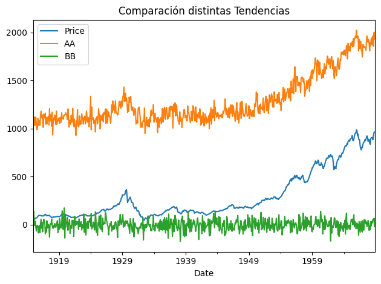
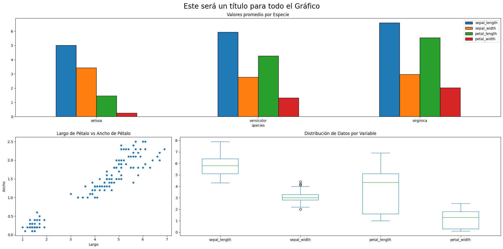

El siguiente notebook tiene por propósito mostrar algunos comandos básicos para poder realizar Exploración de Datos utilizando Pandas.
import seaborn as snsimport matplotlib.pyplot as plt# Vamos a cargar los siguientes datos para poder explorarlos.iris_df = sns.load_dataset("iris")titanic_df = sns.load_dataset("titanic")ts_df = sns.load_dataset("dowjones")iris_df
sepal_length
sepal_width
petal_length
petal_width
species
0
5.1
3.5
1.4
0.2
setosa
1
4.9
3.0
1.4
0.2
setosa
2
4.7
3.2
1.3
0.2
setosa
3
4.6
3.1
1.5
0.2
setosa
4
5.0
3.6
1.4
0.2
setosa
...
...
...
...
...
...
145
6.7
3.0
5.2
2.3
virginica
146
6.3
2.5
5.0
1.9
virginica
147
6.5
3.0
5.2
2.0
virginica
148
6.2
3.4
5.4
2.3
virginica
149
5.9
3.0
5.1
1.8
virginica
150 rows × 5 columns
Medidas de Tendencia Central
Los comandos .mean() y .median() permiten calcular la media y la mediana en datos numéricos. Como se ve en los ejemplos permite llamar una Serie de Pandas y calcular un valor.
Tip: En caso de querer aplicar estos comandos a un DataFrame se recomienda utilizar el flag numeric_only = True para evitar calcular estos valores en Datos Categóricos donde no hacen sentido.
print(f"Promedio de Ancho de Petalo {iris_df['sepal_width'].mean()}")print(f"Mediana de Largo de Petalo {iris_df['sepal_length'].median()}")
Promedio de Ancho de Petalo 3.0573333333333337
Mediana de Largo de Petalo 5.8
Pandas también cuenta con el comando .mode() el cuál devuelve la moda. A diferencia de los comandos anteriores, .mode() puede utilizarse tanto para datos categóricos como datos numéricos.
print(f"Moda de Especies: ")iris_df["species"].mode()
El comando .quantile() permite calcular algún percentil de interés. q es un valor que va entre 0 y 1 para indicar el percentil requerido. Recordar que la mediana es equivalente al Percentil 50.
Pandas permite el cálculo de distintas medidas de dispersión. Al igual que los comandos anteriores contiene el flag numeric_only = True para evitar inconvenientes en DataFrames con distintos data types. Además contiene el comando ddof el cuál permitirá diferenciar si se quiere la medida poblacional (ddof = 0) o la muestral (ddof = 1).
A continuación se mostrarán comandos propios de Pandas para poder generar los gráficos visto a lo largo de las clases. Se sugiere este tipo de gráficos cuando se trabaje con DataFrames ya que poseen buena documentación y una interfaz común para todos los gráficos.
Opciones:
kind: Permite indicar mediante un string el tipo de gráfico a mostrar.
figsize = (w,h): Permite fijar el tamaño de la figura. Notar que primero se entrega el ancho y luego el alto. Yo normalmente uso (20,6) ya que considero que queda bastante bien.
edgecolor: Permite indicar el color del borde de las barras mediante un string. Tiene sentido para histogramás y bar plots.
grid = True/False: Permite mostrar o no una grilla.
bins = n: Opción sólo para histogramas que permite indicar en cuántos bins se dividen los datos en el Histograma.
alpha = 0.5: Corresponde al grado de transparecencia. Es un valor que va entre 0 y 1. Entre más pequeño el valor, más transparente.
title: Permite agregar un Título como String.
xlabel: Permite agregar un Título al Eje X.
ylabel: Permite agregar un Título al Eje Y.
Histogramas
iris_df.plot( kind="hist", alpha=0.5, bins=30, figsize=(20, 6), edgecolor="black")# Notar que este genera todos los histogramas superpuestos...
Por alguna razón Pandas tiene el comando .hist(). Este comando es bastante útil porque a diferencia del anterior no superpone los histogramas, lo cual la mayoría de las veces es lo que se busca.
iris_df.hist(figsize=(20, 6), bins=30, edgecolor="black", grid=False)# tight_layout es opcional y a veces evita que hayan traslapes de títulos.# Usarlo si es que es necesario.plt.tight_layout()
Barplots
A diferencia de los Histográmas, los Barplots son utilizados para aplicar una agregación antes de gráficar. Esta agregación se puede utilizar mediante .value_counts() que permite contar valores, o mediante .groupby() el cuál permite aplicar otros tipos de agregación.
# Acá por ejemplos contamos la cantidad de pasajeros por Sexotitanic_df["sex"].value_counts()
sex
male 577
female 314
Name: count, dtype: int64
# Una vez que tenemos contados los elementos podemos graficar...titanic_df["sex"].value_counts().plot( kind="bar", figsize=(5, 6), title="Número de Pasajeros por Sexo...", edgecolor="black",)plt.tight_layout()
## Otro ejemplo, en este caso calculando el promedio por de Edad y Tarifa por Año.titanic_df.groupby("pclass")[["age", "fare"]].mean()
age
fare
pclass
1
38.233441
84.154687
2
29.877630
20.662183
3
25.140620
13.675550
## En este caso, el índice Pclass irá al Eje X y los valores agregados de Age y Fare irán como barras.iris_df.groupby("species").mean().plot(kind="bar", edgecolor="black")plt.tight_layout()
Notar que a diferencia de los casos anteriores, el gráfico de puntos requiere que se definan qué columna irá en x y en y respectivamente.
iris_df.plot( x="petal_length", y="petal_width", kind="scatter", title="Largo de Pétalo vs Ancho de Pétalo", xlabel="Largo", ylabel="Ancho",)
Lineplot
El lineplot es el gráfico por defecto de Pandas, por lo tanto no es necesario definir el parámetro kind. Al igual que el gráfico de Puntos se debe definir las variables x e y. Se recomienda siempre que x sea una variable de tipo temporal.
ts_df.plot(x="Date", y="Price", title="Evolución del Dow Jones")
## Este es un ejemplo de varias series de tiempo en conjunto.## Este código sólo genera datos sintéticos.from scipy.stats import normts_df["AA"] = ts_df["Price"] + norm.rvs(size=649) *55+1000ts_df["BB"] =-norm.rvs(size=649) *55ts_df.set_index("Date").plot(title="Comparación distintas Tendencias")plt.tight_layout()

Mosaico
En muchas ocaciones nosotros queremos mostrar una compilación de todos nuestros gráficos más que cada uno por separado. Para eso Matplotlib cuenta con la opción Mosaico.
Mosaico permite generar una grilla definida como un String. Si se fijan nuestra grilla se define por el string:
"""AAA BCC"""
En este caso nuestro canvas se divide en 6 partes, el gráfico que asigne a A utilizará las 3 secciones superiores, B utilizará sólo la sección de abajo a la izquierda y C utilizará las 2 restantes.
Para asignar cada sección .plot() de pandas posee el parámetro ax donde se debe generar la asignación.
fig = plt.figure(figsize=(20, 10))ax = fig.subplot_mosaic("""AAA BCC""")# Gráfico asignado a Ciris_df.drop(columns="species").plot( kind="box", ax=ax["C"], title="Distribución de Datos por Variable")## Gráfico asignado a Biris_df.plot( x="petal_length", y="petal_width", kind="scatter", title="Largo de Pétalo vs Ancho de Pétalo", xlabel="Largo", ylabel="Ancho", ax=ax["B"],)## Gráfico asignado a Airis_df.groupby("species").mean().plot( kind="bar", edgecolor="black", ax=ax["A"], rot=0, title="Valores promedio por Especie",)## Permite Agregar un título general a todo el Gráficoplt.suptitle("Este será un título para todo el Gráfico", fontsize=20)plt.tight_layout()

Matplotlib
Los comandos mostrados anteriormente son una adaptación de Matplotlib a Pandas. La gracia que tienen es que son fáciles de aprender y funcionarán directamente en Pandas que será nuestra principal fuente de datos.
En el caso de trabajar con Numpy, estos comandos NO FUNCIONARÁN. Por lo tanto es necesario utilizar la API de Matplotlib. La traducción no es 100% directa, pero normalmente todos los parámetros de .plot() se cambiarán por comandos del tipo plt.---
Ejemplo
plt.plot(x,y, c ="red") #Existe también plt.bar, plt.hist, plt.scatter, plt.boxplot.plt.title("Este va a ser un título")plt.xlabel("Este será una etiqueta del Eje X")
Aprender Matplotlib es bastante más complicado pero tiene funcionalidades muchísimo más avanzadas que Pandas. Para este curso, no será necesario especializarse en Matplotlib, pero sí más adelante utilizaremos algunos gráficos que no se pueden hacer tan fácilmente en Pandas (pero serán casos puntuales).